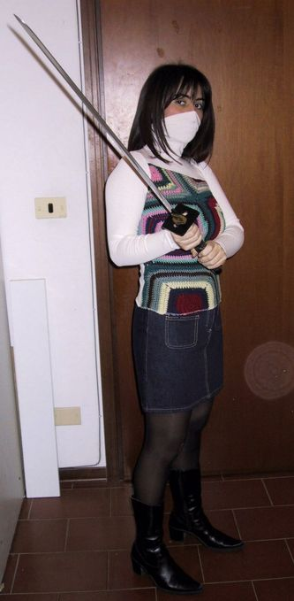
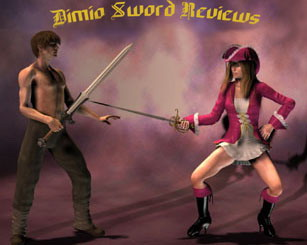

Lo Shinobi To
|
|
Lo Shinobi To |
|
La spada dei Ninja nel Giappone medievale |
Recensione di una delle spade più straordinarie e controverse mai realizzate:
Il Ninja To!
 |
Oggetto della recensione
Protagonista della recensione è il Ninja To (detto anche Shinobi To) della Hanwei, riconosciuto quasi unanimamente essere la migliore replica di questo tipo di spada che sia possibile reperire oggi sul mercato.
 |
Una spada dalla notte dei tempi
E' un dato di fatto che, quando si parla dei Ninja, spesso si corre il rischio raccontare favole visto che su queste figure misteriose è stato ricamato moltissimo sopra.
I Ninja storici, vissuti nel medioevo nipponico, erano fondamentalmente agenti segreti ed assassini (simili per certi versi alla mafia nostrana), erano divisi in clan ognuno dei quali custodiva una particolare reinterpretazione di quella che viene chiamata l'arte dell'invisibilità. Ogni clan prediligeva particolari tecniche e armi, per cui è molto azzardato indicare un singolo modello si spada e definirlo la "spada dei ninja".
I Ninja mettevano in pratica il detto che "La cosa più importante in un arma è l'uomo che la impugna", per cui si addestrarono a usare come arma qualsiasi cosa fosse disponibile, in ogni caso ci sono alcune caratteristiche che accomunavano le lame usate dai ninja dei vari clans, esse tendevano ad essere più pratiche, meno decorate, più rettilinee e più corte delle classiche katane dato che spesso ci si poteva ritrovare a combattere in luoghi chiusi e angusti.
A volte i Ninja partivano dalle katane trovate sui campi di battaglia per costruire le loro, esse venivano accorciate tagliando la base e trasformando in codolo parte della lama, il risultato era una lama più rettilinea e più corta.
Questo invece è il modello, per così dire, cinematografico di questo tipo di spada... Anch'esso è più corto di una katana, è costituito da una lama dritta e presenta un paramano (tsuba) quadrato. Da vari esperti viene ritenuto una completa invenzione di Hollywood.
 |
In realtà è sbagliata anche questa valutazione, sarebbe più giusto parlare, al massimo, di una estremizzazione. Infatti, se prendiamo quella che abbiamo definito come "Spada Ninja" storica e ne portiamo ai limiti le caratteristiche (lama più corta e dritta di una katana e tsuba meno elaborata), quella che viene fuori è proprio la versione cinematografica della stessa.
Le due spade sono comunque molto simili ed è del tutto probabile che siano esistite spade Ninja molto simili a quest'ultima versione che, alla prova dei fatti, dimostra facilmente di possedere tutte le qualità della controparte "storica".
 |
Scherma con il Ninja To
Il Ninja To è fondamentalmente una variante della Katana classica, per cui tutte le tecniche sviluppate per quest'ultima sono facilmente trasferibili allo Shinobi To, ciononostante, con esso è anche possibile utilizzare tecniche di nuova concezione, la sua maggiore leggerezza e brevità le consentono di portare attacchi fulminei e difficili da mettere in atto con la più pesante Katana dei Samurai dell'epoca.
 |
Retta a una mano con presa riversa, poteva esssere celata dietro alla schiena e utilizzata per sferrare fulminei attacchi o parate, la sua minore (o assente) curvatura rendeva più agile l'uso di stoccata, mentre la Tsuba (paramano) quadrata, oltre a fornire una protezione maggiore, permetteva anche di colpire con i suoi spigoli come si potrebbe fare con un pugno di ferro.
 |
Il dorso della lama poteva essere utilizzato per bloccare la lama avversaria senza danneggiare il proprio filo. Inoltre la minore lunghezza della lama permetteva di effettuare un gioco più stretto nel combattimento, questo poteva costituire un vantaggio soprattutto in spazi chiusi come un'abitazione o un corridoio.
Infine la Saya (fodero), che spesso veniva realizzata di particolare robustezza con rinforzi metallici e puntali conici, poteva essere usata a sua volta per armare la seconda mano.
 |
Quale scegliere?
Sebbene le lame giapponesi siano sicuramente tra le più replicate e richieste, la quasi totalità delle riproduzioni di Ninja To sul mercato sono di qualità scarsa. Per lo più si tratta di lame espositive in acciaio inossidabile (440 se si è fortunati), con falsa doppia tempra (l'hamon viene simulato tramite immersione in acido) e con codolo saldato.
Per fortuna la Hanwei, che negli anni si è distinta per la sua buona produzione di lame di qualità a prezzi competitivi, ha messo in commercio una sua versione del Ninja To che viene quasi unanimamente riconosciuta come la migliore replica attualmente disponibile sul mercato. Infatti, pur essendo realizzata in maniera semi-artigianale, possiede comunque tutte le qualità che deve avere.
|  |
Dettagli tecnici
|
 |
Caratteristiche
|
Nome In giapponese "To" significa spada, per cui Ninja To significa semplicemente "Spada Ninja", per la stessa ragione essa viene anche chiamata "Shinobi To" o "Maru To". Tempi di consegna Anche se può capitare che qualche armeria ne abbia un esemplare immediatamente disponibile, è probabile che possano passare un paio di settimane prima di poterci mettere le mani sopra. In ogni caso i tempi sono buoni. Confezione La spada si presenta bene impacchettata in una scatola di cartone che a sua volta ne contiene un'altra di polistirolo che forniscono una protezione più che soddisfacente per l'oggetto contenuto. Impugnatura Le impugnature delle lame originali venivano realizzate in legno ricoperto da pelle di razza a sua volta ricoperta da una striscia di seta intrecciata nella maniera caratteristica. Il Ninja To Hanwei è realizzato anch'esso da una base di legno ricoperto da un materiale che, pur non essendo pelle di razza, la rimpiazza piuttosto bene sia nell'estetica che nelle caratteristiche (ritengo sia un qualche tipo di materiale gommoso sintetico) e infine la striscia di stoffa intrecciata che, pur non essendo seta, garantisce un'ottima presa (anche migliore secondo me). Il mio giudizio sull'impugnatura è decisamente positivo, la presa è salda e sicura e trasmette alla mano una sensazione quasi di elasticità, inoltre, al contrario di altre repliche odierne e conformemente agli originali, è piuttosto lunga in maniera da permettere un buon gioco di mani. La pelle di finta razza è disponibile in due versioni, una bianca giallastra classica e l'altra nera come l'avrei preferita, in ogni caso qui in Italia non sono riuscito a reperire la versione nera.
Guardia La Guardia (Tsuba) è costituita da un quadrato in metallo brunito lavorato, esso presenta due fori nei quali può essere infilato il Sageo (la fune che i Ninja spesso portavano avvolta intorno alla Saya). L'unico appunto da parte mia riguarda proprio la lavorazione... Vi sono impresse le mistiche posizioni delle mani del Ku Ji In, un'antica disciplina esoterica giapponese di derivazione cinese diffusa presso alcuni dei clan Ninja che appare comunque abbastanza assurda sulla guardia di una spada per diverse ragioni: 1. Casomai il Ninja se ne dimenticasse qualcuna... ecco il promemoria del perfetto Ninja mistico, la cosa in se è ridicola. 2. Storicamente il Ku Ji veniva indicato con un altro simbolo e comunque le posizioni delle mani raffigurate sono solo 8 (ne manca una). 3. Ciò che è raffigurato in realtà non è altro che l'estetica della disciplina in questione che richiede anni di pratica per essere appresa, è un pò come se sul fonendoscopio di un medico fosse indicata la posizione del cuore e dei polmoni, nel caso il dottore non se la ricordasse... In ogni caso, tecnicamente, la Tsuba è robusta e sicuramente adatta alla sua funzione. Lama Molte Katane giapponesi (e anche il Ninja To che ne è un sottotipo) venivano costruite a partire da una striscia di acciaio e una barra di ferro che venivano unite insieme mediante percussione a caldo... il tutto veniva poi ripiegato più e più volte (una 30 ina) e sottoposto a diversi trattamenti termici (tempra) in acqua o olio. Il risultato erano veri capolavori della metallurgia, la lama finita presentava una serie di strati sottilissimi di diversa durezza che le conferivano allo stesso tempo resistenza ed elasticità. Una caratteristica tipica delle lame giapponesi è l'Hamon, o linea di tempra, cioè quella linea variamente ondulata che separa il filo dal corpo della lama. Ciò è dovuto alle procedure di tempra differenziale che rendono il filo più duro del corpo. In questo modo una lama scontrandosi con un'altra non si spezzava (al massimo si scheggiava il filo). Il Ninja To della Hanwei invece viene ricavato da un unica barra di acciaio 1050 che viene poi lavorato e temprato in maniera differenziale in modo da dare il classico rapporto di durezza 40/60 HRC tra corpo e filo. Ovviamente la qualità ottenuta non è allo stesso livello degli originali (che anche a suo tempo costavano una fortuna), ciononostante questa lama è decisamente al di sopra di molte altre lame per diverse ragioni: 1. L'acciaio, oggi ottenuto tramite processi industriali, è sicuramente di ottima qualità e privo di impurità. 2. La geometria di questa lama è veramente ben studiata... la sezione è pentagonale ed ha un buon assottigliamento distale tale da renderla una lama decisamente veloce e robusta. 3. La tempra differenziale è realizzata molto bene e dà luogo ad un Hamon visibile. 4. La bilanciatura a 10cm dalla Tsuba la rende un'arma molto controllabile e rapida, la lama mantiene un buon spessore anche distalmente e ciò la rende al contempo potente nei tagli e, anche grazie alla sua geometria, inflessibile nelle stoccate.
Codolo Come per tutte le spade che si definiscono "Battle Ready" il codolo è un blocco unico con la lama, senza saldature che potrebbero cedere durante uno scontro. Affilatura La lama non può essere venduta affilata a meno di avere ottenuto il permesso della questura, il filo comunque è abbastanza sottile e sicuramente rifarlo non dovrebbe costituire un problema. La punta invece purtroppo è stata smussata (un crimine secondo me) e rifarla non credo sia così facile... Prezzo Il prezzo è di € 260 che anche in questo caso conferma l'ottimo rapporto prezzo/prestazioni delle Hanwei. |
|
Prova sul campo
La spada è molto comoda da impugnare ed è anche molto veloce, sia retta a una mano che a due, in tutte le prove di taglio (su bersagli leggeri) e di affondo a cui l'ho sottoposta si è sempre comportata più che egregiamente. Negli affondi ha sempre mostrato una rigidità pressochè totale. Se si dovesse fare un paragone occidentale, con le dovute riserve, può ricordare la Spatha tardo imperiale romana.
Sicuramente si tratta di una spada votata all'utilizzo pratico, lunga abbastanza da consentirle di affrontare lame più imponenti, ma sufficientemente agile da consentirle di essere trasportata e utilizzata fulmineamente all'occorrenza senza intralcio.
Qualcuno ha scritto che sarebbe la spada ideale da tenere sotto il letto per affrontare un eventuale intruso... E non mi sento di dargli torto.
|  |